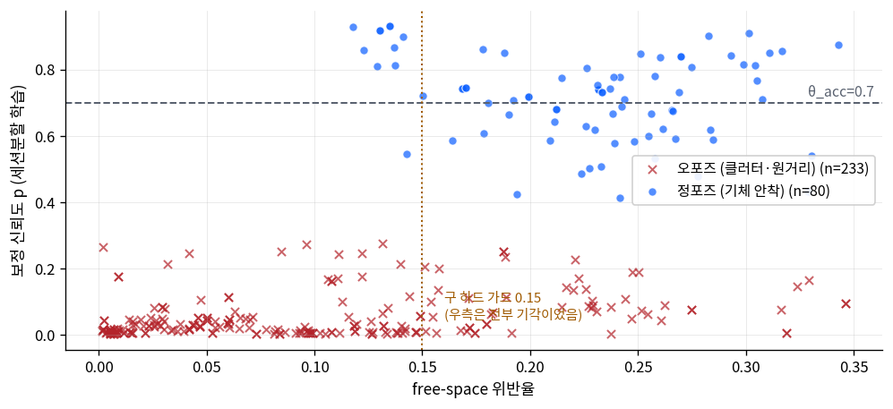
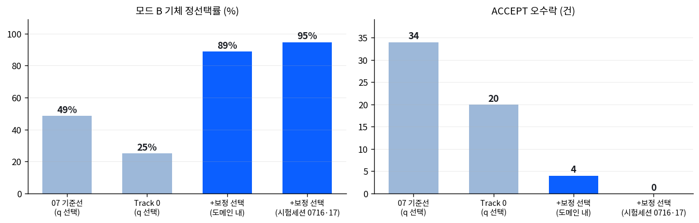
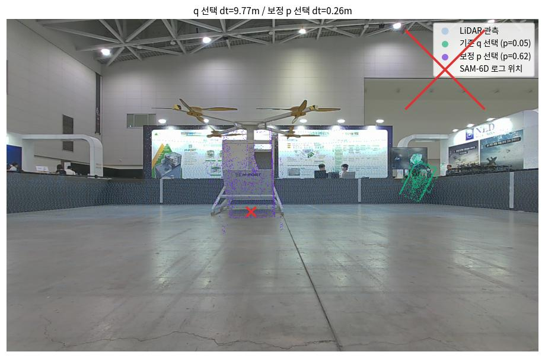
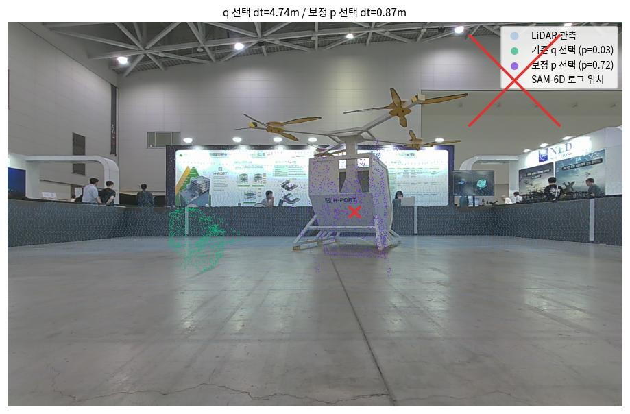
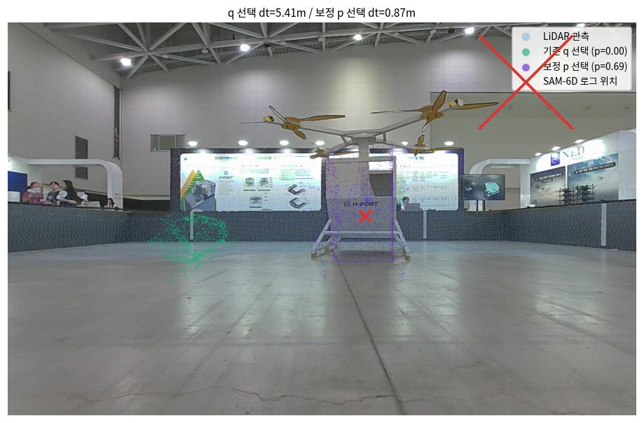
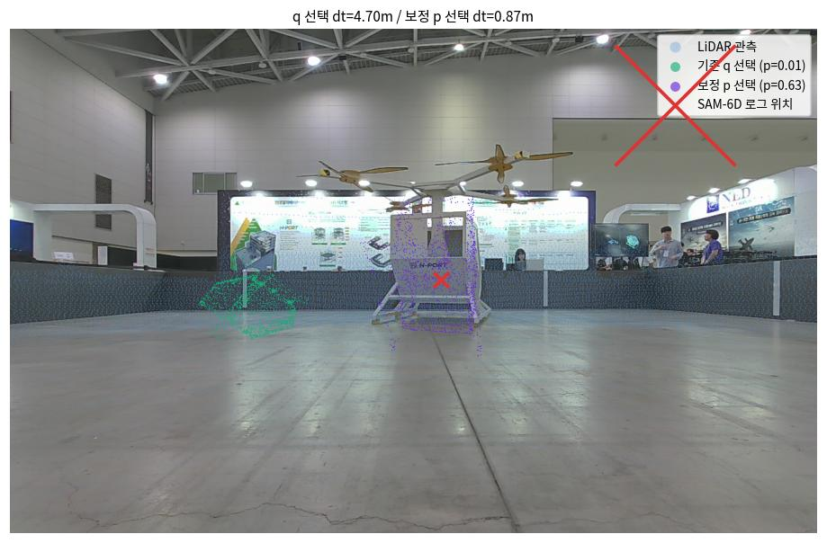
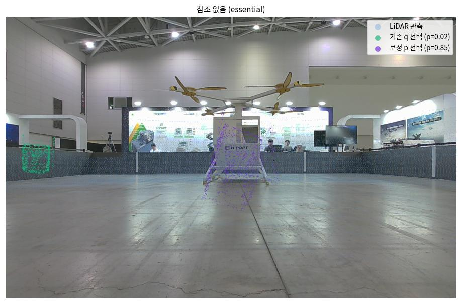
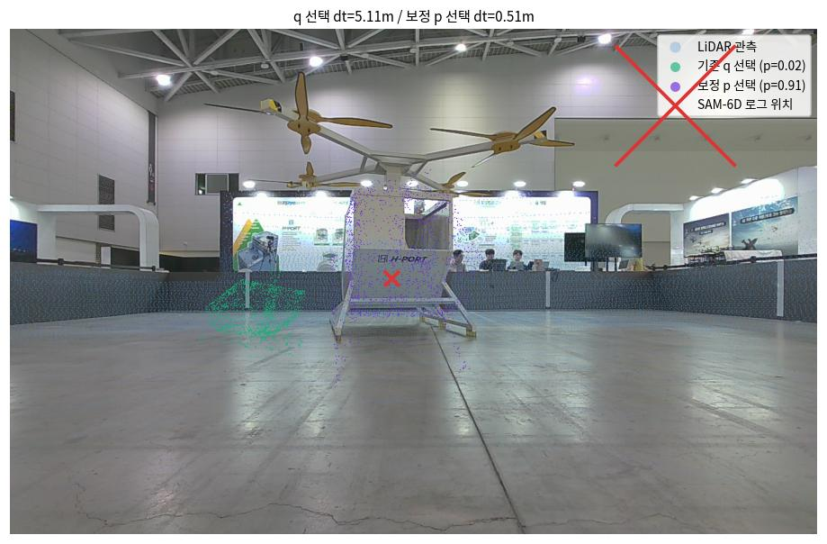

| 항목 | 내용 |
|---|---|
| Track 0 (무학습) | T0-1 평면성 게이트: 클러스터 λ₃/λ₁ < 0.02 배제 (실측: 기체 0.24~0.39 vs 평면 클러터 0.0001~0.011) · T0-2 FOV-aware ACCEPT 강등 (모델 투영 화면 내 비율 < 0.6) |
| Track 2 (학습) | M3-3 신뢰도 보정 — 기존 10-d 특징(shape6d/verify/confidence.py) 위 IRLS 로지스틱. 표준화 + 도메인 균형 + l2 선택(holdout AUC) |
| 보정 데이터 | GSO 800행: 4샤드 200장면 — GT마스크 정합(gso_A: 정 110/오 90, 자연 실패 포함) + 의도적 플립·90° 오포즈 ICP 수렴(gso_flip: 정 169/오 431, 라벨은 항상 sym-aware ADD<0.1D) · UAM 255행: 70샘플의 A/B 최종 + 모드 B 후보 풀 전체 (라벨: SAM-6D 로그 위치 dt<1m 정 / >2m 오, essential 무참조는 07 육안 검증된 원거리·바닥 패턴만 오) |
| 평가 정책 | ① 판정: 보정 p ≥ θ ACCEPT (구 하드 가드는 free>0.5 극단만 잔류) ② 선택: 후보 argmax를 q(inlier×cov−free) vs 보정 p로 비교 ③ 일반화: GSO-only 학습본 교차 + 세션 분할(0710·14·15 학습 → 0716·17 시험) |
| 지표 (모드 B) | 07 기준선 | Track 0 적용 | 해석 |
|---|---|---|---|
| 평면 클러터 오수락 (부스·게시판·바닥) | 지배적 | 0건 | λ₃/λ₁ 게이트가 실패 클래스 제거 — 바닥 스트립 p=1.00류 소멸 |
| 전체 ACCEPT 오수락 | 34 | 20 | 잔여는 8~10m 비평면 클러터 (인파·부스 구조물) |
| 기체 정선택 (dt<1m) | 18/37 | 9/36 | 평면이 빠진 top-5에 새 클러터 진입 → q가 원거리 희소 클러터에 패배. 기체 클러스터 자체는 게이트 통과(λ₃/λ₁ 0.39) — 게이트 부작용이 아니라 선택 지표 문제 |
| 프레임 시간 (중앙) | 28.9s | 17.0s | 후보 수 감소 (−41%) |
이 후퇴가 곧 다음 절의 실험 설계가 됐다: 선택도 판정도 학습된 신뢰도가 맡아야 한다는 것.
| 항목 | 결과 |
|---|---|
| holdout AUC (도메인 층화 30%) | 전체 0.885 — gso_A 0.815 · gso_flip 0.890 · uam_B 1.000(n=16) |
| UAM 판정 게이트 (θ 스캔) | θ=0.7: 정포즈 ACCEPT 45/45 (100%)·오수락 0 · θ=0.8: 44/45 (98%)·0 · θ=0.9: 33/45 (73%)·0 — 07의 13% → 98~100% |
| 전 도메인 단일 운용점 | FA<1%에서 리콜 11% — 미달. 도메인 간 특징 의미 상충(3.2)이 원인. 도메인별 임계로는 성립, 단일 모델은 2차 특징 필요 |
| 특징 | GSO-only 학습 (완전 CAD) | GSO+UAM 학습 (부분 CAD 포함) |
|---|---|---|
| coverage | +13.9 | −1.3 |
| free_viol | −13.4 (위반=오포즈) | +0.2 (위반해도 정포즈 가능) |
| rmse_over_tau | −15.5 | −3.8 |
GSO-only 보정기는 물리적으로 "타당한" 가중치를 배우지만 UAM에서 무력하다(선택 8/36 — q와 동급). 부분 CAD(미모델 로터·받침대) 도메인에서는 정포즈일수록 free 위반이 크기 때문이다. 단일 선형 모델은 두 도메인을 동시에 못 섬긴다 — 위반의 총량이 아니라 공간 분포(국소 부착물 vs 광역 오포즈)를 특징화해야 한다는 08 §4.1 재설계 방향이 실측으로 확정됐다.


| 선택 정책 (모드 B) | 정선택 (dt<1m) | ACCEPT 정 / 오 |
|---|---|---|
| q = inlier×cov − free (기존) | 9/36 (25%) | 2 / 14 |
| 보정 p, 도메인 내 (참고치 — 순환성 있음) | 32/36 (89%) | 32 / 4 |
| 보정 p, 세션분할 시험세션 (0716·17 미학습) | 18/19 (95%) | 12 / 0 · 행단위 AUC 1.000 (n=127) |
초록=기존 q 선택 · 보라=보정 p 선택 · 빨간 ×=SAM-6D 로그 위치. 렌더에 쓴 보정기는 세션분할 가중치 (0716·17 UAM 미학습 — 5.1~5.4는 완전 미학습 세션). 괄호 p는 각 선택 후보의 보정 신뢰도.






| 한계 | 내용 |
|---|---|
| 라벨이 프록시 | UAM 정/오 = SAM-6D 로그 위치 dt<1m — mm급 정밀도 검증 아님. essential 무참조 음성은 육안 검증된 패턴(원거리·바닥)만 사용 |
| 단일 장면·단일 물체 | 세션 분할은 시간·조명·시점 변화만 담보. 다른 장소·물체로의 이전은 미검증 — free_viol 부호 반전이 보여주듯 도메인 의존성이 크다 |
| 전 도메인 단일 운용점 미달 | GSO+UAM 통합 임계로는 FA<1%@리콜 11%. 도메인별 임계는 우회일 뿐 — 2차: free-space 공간 분해 특징 + 미모델 영역 마스크(08 §4.1)로 단일 모델 성립이 목표 |
| 보정기 미통합 | 선택·판정 개선은 오프라인 평가(후보 특징 재채점). 파이프라인 통합 후 회귀 3종(BOP·오염·UAM) 기준선 재측정 필요 |
# Track 0 적용 재평가 (후보 특징 포함) → uam_results_t0c/ python3 eval/external_test/run_uam_log.py --n 35 --out eval/external_test/uam_results_t0c # 보정 데이터 생성 (GSO 4샤드×50장면 → 800행, CAD는 Fuel 자동 캐시) python3 eval/external_test/gen_calib_set.py --shards 4 --per-shard 50 # 보정 학습 + 게이트 리포트 → calib_data/calib_v1.npz python3 train/train_verifier_calib.py # 선택 정책 오프라인 평가 (q vs p) python3 train/eval_selection_policy.py # 보고서 그림·비교 오버레이 python3 eval/external_test/make_t0_calib_overlays.py
산출물: calib_data/calib_gso.json(800행) · calib_v1.npz(통합 학습) ·
calib_v1_sessionsplit.npz(세션분할 검증용) · 결과 3세대: uam_results(07 정본) /
uam_results_t0 / uam_results_t0c(후보 특징 포함 정본).